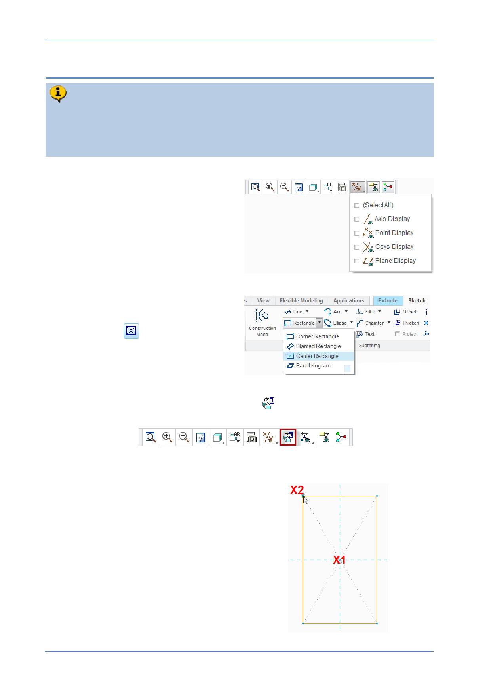

PTC Academic Program
Step 3: Create a sketch to define the shape of the cube
A 2D, 30 mm square will be sketched on datum plane FRONT. The square will
be drawn symetrical about the intersection of the reference lines using a Center
Rectangle tool. You will add an equal length constraint on two adjacent sides of
the square.
1. Toggle off the display of datum planes:
In the Graphics toolbar, disable the
display of all datum features.
2. Sketching the rectangle:
In the Sketch tab, select Center
Rectangle
from the Rectangle
types drop-down menu.
In the Graphics toolbar, click Sketch View
to reorient the sketch plane parallel
to the screen.
The model space will rotate until the sketch plane is parallel to the computer screen.
Move the cursor over the
intersection of the two reference
lines at X1 , when the cursor snaps
to the intersection, click to set the
center of the rectangle.
Move the cursor diagonally and click
X2 to set a corner of the rectangle.
Middle-click in the graphics area to
deselect the rectangle tool.
© 2012 PTC
Creo Parametric 2.0 Primer
Page 16